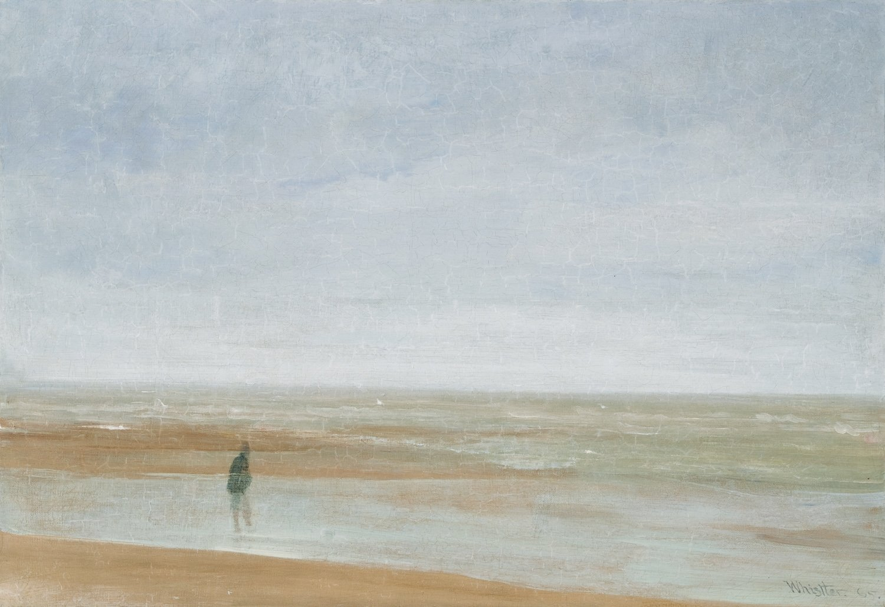
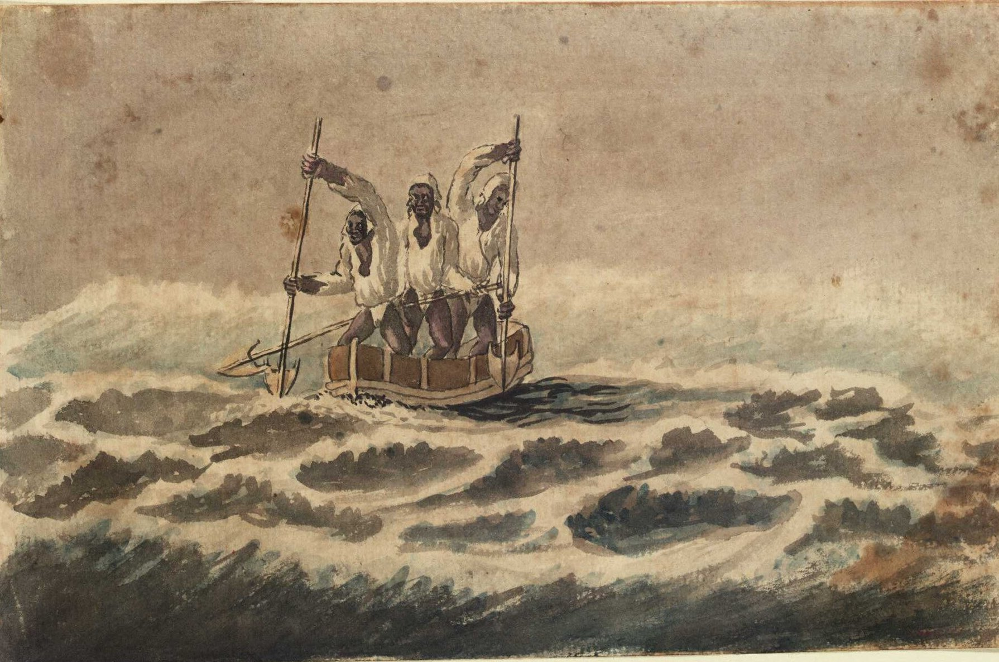
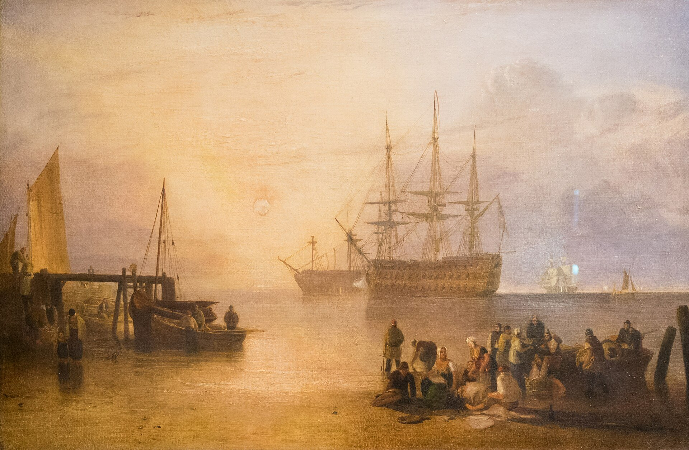

← 目次“One thing more remained to do—say good-bye to my excellent aunt. I found her triumphant. I had a cup of tea—the last decent cup of tea for many days—and in a room that most soothingly looked just as you would expect a lady’s drawing-room to look, we had a long quiet chat by the fireside. In the course of these confidences it became quite plain to me I had been represented to the wife of the high dignitary, and goodness knows to how many more people besides, as an exceptional and gifted creature—a piece of good fortune for the Company—a man you don’t get hold of every day. Good heavens! and I was going to take charge of a two-penny-half-penny river-steamboat with a penny whistle attached! It appeared, however, I was also one of the Workers, with a capital—you know.
Something like an emissary of light, something like a lower sort of apostle.
There had been a lot of such rot let loose in print and talk just about that time, and the excellent woman, living right in the rush of all that humbug, got carried off her feet. She talked about ‘weaning those ignorant millions from their horrid ways,’ till, upon my word, she made me quite uncomfortable. I ventured to hint that the Company was run for profit.
“‘You forget, dear Charlie, that the labourer is worthy of his hire,’ she said, brightly. It’s queer how out of touch with truth women are. They live in a world of their own, and there has never been anything like it, and never can be. It is too beautiful altogether, and if they were to set it up it would go to pieces before the first sunset. Some confounded fact we men have been living contentedly with ever since the day of creation would start up and knock the whole thing over.
“After this I got embraced, told to wear flannel, be sure to write often, and so on—and I left. In the street—I don’t know why—a queer feeling came to me that I was an imposter. Odd thing that I, who used to clear out for any part of the world at twenty-four hours’ notice, with less thought than most men give to the crossing of a street, had a moment—I won’t say of hesitation, but of startled pause, before this commonplace affair. The best way I can explain it to you is by saying that, for a second or two, I felt as though, instead of going to the centre of a continent, I were about to set off for the centre of the earth.
For a second or two, I felt as though, instead of going to the centre of a continent, I were about to set off for the centre of the earth.
“I left in a French steamer, and she called in every blamed port they have out there, for, as far as I could see, the sole purpose of landing soldiers and custom-house officers. I watched the coast. Watching a coast as it slips by the ship is like thinking about an enigma. There it is before you—smiling, frowning, inviting, grand, mean, insipid, or savage, and always mute with an air of whispering, ‘Come and find out.’
Watching a coast as it slips by the ship is like thinking about an enigma.
This one was almost featureless, as if still in the making, with an aspect of monotonous grimness. The edge of a colossal jungle, so dark-green as to be almost black, fringed with white surf, ran straight, like a ruled line, far, far away along a blue sea whose glitter was blurred by a creeping mist. The sun was fierce, the land seemed to glisten and drip with steam. Here and there greyish-whitish specks showed up clustered inside the white surf, with a flag flying above them perhaps. Settlements some centuries old, and still no bigger than pinheads on the untouched expanse of their background. We pounded along, stopped, landed soldiers; went on, landed custom-house clerks to levy toll in what looked like a God-forsaken wilderness, with a tin shed and a flag-pole lost in it; landed more soldiers—to take care of the custom-house clerks, presumably. Some, I heard, got drowned in the surf; but whether they did or not, nobody seemed particularly to care. They were just flung out there, and on we went. Every day the coast looked the same, as though we had not moved; but we passed various places—trading places—with names like Gran’ Bassam, Little Popo; names that seemed to belong to some sordid farce acted in front of a sinister back-cloth. The idleness of a passenger, my isolation amongst all these men with whom I had no point of contact, the oily and languid sea, the uniform sombreness of the coast, seemed to keep me away from the truth of things, within the toil of a mournful and senseless delusion. The voice of the surf heard now and then was a positive pleasure, like the speech of a brother. It was something natural, that had its reason, that had a meaning.

Gabriel Bray, African canoe paddling through surf, 1775／Public domain／Commons
Now and then a boat from the shore gave one a momentary contact with reality. It was paddled by black fellows. You could see from afar the white of their eyeballs glistening. They shouted, sang; their bodies streamed with perspiration; they had faces like grotesque masks—these chaps; but they had bone, muscle, a wild vitality, an intense energy of movement, that was as natural and true as the surf along their coast. They wanted no excuse for being there. They were a great comfort to look at. For a time I would feel I belonged still to a world of straightforward facts; but the feeling would not last long. Something would turn up to scare it away.
Once, I remember, we came upon a man-of-war anchored off the coast. There wasn’t even a shed there, and she was shelling the bush. It appears the French had one of their wars going on thereabouts. Her ensign dropped limp like a rag; the muzzles of the long six-inch guns stuck out all over the low hull; the greasy, slimy swell swung her up lazily and let her down, swaying her thin masts. In the empty immensity of earth, sky, and water, there she was, incomprehensible, firing into a continent. Pop, would go one of the six-inch guns; a small flame would dart and vanish, a little white smoke would disappear, a tiny projectile would give a feeble screech—and nothing happened.
Pop, would go one of the six-inch guns; a small flame would dart and vanish, a little white smoke would disappear, a tiny projectile would give a feeble screech—and nothing happened. Nothing could happen.
Nothing could happen. There was a touch of insanity in the proceeding, a sense of lugubrious drollery in the sight; and it was not dissipated by somebody on board assuring me earnestly there was a camp of natives—he called them enemies!—hidden out of sight somewhere.

J. M. W. Turner, Sun Setting through Vapour／Public domain／Commons
“We gave her her letters (I heard the men in that lonely ship were dying of fever at the rate of three a day) and went on. We called at some more places with farcical names, where the merry dance of death and trade goes on in a still and earthy atmosphere as of an overheated catacomb; all along the formless coast bordered by dangerous surf, as if Nature herself had tried to ward off intruders; in and out of rivers, streams of death in life, whose banks were rotting into mud, whose waters, thickened into slime, invaded the contorted mangroves, that seemed to writhe at us in the extremity of an impotent despair. Nowhere did we stop long enough to get a particularized impression, but the general sense of vague and oppressive wonder grew upon me. It was like a weary pilgrimage amongst hints for nightmares.
Nowhere did we stop long enough to get a particularized impression, but the general sense of vague and oppressive wonder grew upon me. It was like a weary pilgrimage amongst hints for nightmares.